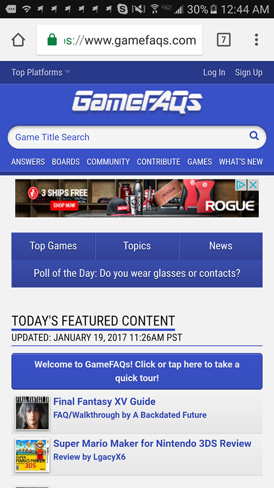

Design Principles in Mobile Sites
Proximity — Scott
GameFaQs
This website; gamefaqs shows a great way to use proximity. It has slight spaces to categorize the placement of the various things on the website. The search bar on top, then a small space. After the space it has the categories this website offers. Then it has another small space and ads afterwards before the space before the actual content. Those who know what they are looking for know exactly where to go, and those who don't can easily go down the website to find what it is they are looking for. It makes it easy to sort out what you are looking for on the website and the placement of the various options.
Alignment — Jhonatan

Nickolodeon
Nick is a webpage that target kids to promote tv shows, games and products. The alignment is the same for all the services they offer and there is a repetition also in the colors and typography. They keep it simple for kids.
Repetition — Jhonatan

Funko
This webpage's main objective is to sell their many variations of funko pops they have. In here we can see they all have the same pattern, a small box with the id number of their product and a link to more details, alignment is also part of how they use repetition. They keep it simple and all the customer needs to do is to be interested in one product in particular and click.
Contrast — Jhonatan

Nike
This webpage is a great example of how contrast is crucial to make your products more attractive. They tend to avoid the typical white background and use one who doesn't mix with the products such as tennis, pants, etc they want to sell.
Typography — Jhonatan

The Church of Jesus Christ of Latter-day Saints
In this webpage talks are the most common thing we can find, many of them are very large so in order for them to not be boring and plain the type of typography its used is crucial. The title is the focal point and then the subtitles are smaller and have a little contrast so we can know which topics are more important than others.